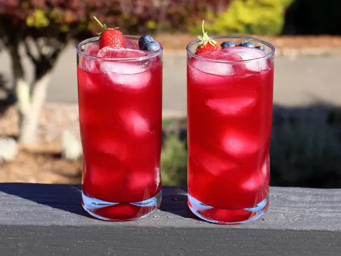

Lemonade

Description
Chef John's vibrant red, white, and blueberry lemonade is a version of our world famous State Fair Lemonade, and this lemonade is incredible, maybe even better than our original.
The intense color and berry flavor make it a stunning summer drink.
Ingredients
- 1 cup (packed) fresh strawberry halves
- 1/2 cup (packed) fresh blueberries
- 1 1/4 cups white sugar, divided
- 6 lemons, organic preferred, or more as needed (you may need as many as 10 lemons)
- 5 cups water
Steps
- Combine strawberries, blueberries, and 1/2 of the sugar in a bowl. Use a potato masher to lightly crush berries until all blueberries have broken open.
- Use a sharp vegetable peeler to peel off just the yellow zest from 6 lemons; add lemon zest to the berry-sugar mixture.
- Pour remaining sugar into the bowl and mix thoroughly. Cover and let sit on the counter for 2 to 6 hours, stirring occasionally, or refrigerate overnight if you prefer.
- Bring 5 cups water to boil in a saucepan, transfer in berry mixture. Immediately turn off heat, and let sit for 5 minutes, stirring a few times.
- Set a fine mesh strainer over a heatproof bowl, and pour berry mixture through the strainer; press out liquid gently. Let cool to room temperature, about 20 minutes.
- Cut the 6 zested lemons in half, and squeeze the juice (through a strainer to catch the seeds) into the bowl.
- Taste, and juice in more lemons as desired. You will have another chance to adjust the final flavor after the lemonade is cold.
- Transfer lemonade into a pitcher and refrigerate until fully chilled, about 1 hour. Give the lemonade a final taste, and adjust with more fresh lemon juice or sugar if necessary. Fill glasses with ice to serve.
Home